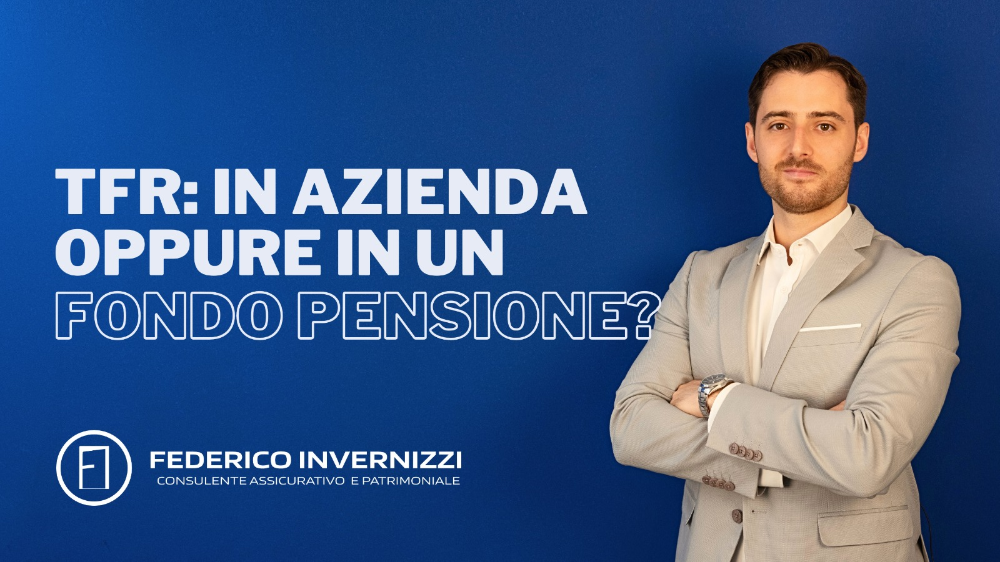

La porta tra te e il mondo assicurativo e
finanziario
Guarda il video
Benvenuto!
Se non sai da dove iniziare per tutelare
correttamente te stesso, la tua famiglia e il tuo patrimonio,
sei nel posto giusto. All’interno di questo sito troverai diversi
strumenti per aumentare la tua conoscenza assicurativa e patrimoniale
come articoli e video.

Sicuramente se sei un lavoratore dipendente ti è stato chiesto
dove vuoi destinare il tuo TFR: se tenerlo in azienda o versarlo in un
fondo pensione. Oggi vediamo quali sono i pro e i contro di entrambe le
soluzioni e qual è la scelta migliore da fare. Iniziamo col
dire che cos’è il TFR: il TFR (o trattamento di fine rapporto)
è una parte dello stipendio (per essere precisi il 6,91% della
retribuzione lorda), che viene accantonato ogni anno e pagato al
lavoratore
Risparmio e investimento
20 novembre 2023
Se hai richiesto un mutuo per l’acquisto di una casa, la banca ti ha
proposto la polizza incendio, scoppio, esplosione. Che polizza è
e perchè è obbligatoria? Lo vediamo in questo articolo!
La polizza incendio, scoppio, esplosione, è semplicemente
un’assicurazione che risarcisce i danni subiti da un’abitazione in
caso di incendio. La particolarità sta nel fatto che su questa
polizza viene apposto il vincolo della banca, ossia una clausola
Casa e famiglia
13 novembre 2023
Oggi parliamo di “franchigia”, uno dei termini tecnici più comuni nel
linguaggio assicurativo, e un concetto ormai conosciuto… ma forse non
del tutto. Per portare tutti a bordo iniziamo col dire che cos’è
la franchigia. La franchigia è quella parte di danno che rimane a
carico dell’assicurato, e che, dunque, non è coperto dall’assicurazione.
Altro
13 novembre 2023
Il progetto
Nel corso degli anni mi sono reso conto che la maggior parte delle persone
ha un livello di conoscenza molto scarso in ambito assicurativo e
patrimoniale.
Di conseguenza molte famiglie e aziende gestiscono male le risorse che
hanno a disposizione e, cosa ancora più grave, sono esposte a rischi
economicamente devastanti senza neanche rendersene conto.
Il modo in cui normalmente lavorano assicurazioni, banche e poste non
aiuta a migliorare questa situazione. Gli operatori del settore, infatti,
antepongono spesso il loro interesse a quello del cliente, incentivando
l’acquisto dei prodotti che garantiscono maggiori provvigioni o che
rientrano nell’iniziativa commerciale del mese.
Questo modo di operare, unito ad un marketing poco brillante
(“vieni da noi che spendi meno”), ha contribuito negli anni a consolidare
in Italia una scarsissima cultura e percezione dell’assicurazione e della
gestione patrimoniale e finanziaria.
Questo progetto nasce con l’obiettivo di informare le persone su queste
tematiche, per metterle nelle condizioni di prendere decisioni corrette
e difendersi dai venditori di prodotti.
Scopri i servizi
Check-Up Gratuito
Analizzo e commento le tue posizioni assicurative e finanziarie in
essere, gratuitamente e senza vincoli/impegno, per aiutarti a
comprendere la loro effettiva qualità e adeguatezza alle tue esigenze.
Eseguo un’analisi completa della tua attuale situazione famigliare,
lavorativa e patrimoniale e ti aiuto ad impostare la gestione
assicurativa e patrimoniale ottimale per te.
Cosa vuol dire affidarsi ad un consulente assicurativo e patrimoniale?
Significa affidarsi ad un professionista che analizza la tua situazione
famigliare, lavorativa, finanziaria e ti aiuta prendere le decisioni
corrette in ambito assicurativo e patrimoniale, seguendo un processo di
consulenza indipendente dalla vendita di prodotti.
Il modo in cui gestisci e proteggi il tuo patrimonio è uno dei fattori
che incide maggiormente sulla tua qualità di vita e sulla capacità di
realizzare gli obiettivi personali e professionali che ti sei prefissato.
Per questo motivo è fondamentale affidarsi ad un vero consulente
assicurativo e patrimoniale ed evitare i venditori
(li riconosci perché non parlano di te ma parlano di quanto siano
fantastici i loro prodotti) e il “fai da te”.
Mission
Aiutare le persone a realizzare i propri obiettivi nonostante gli imprevisti.
La tua porta d'accesso al mondo assicurativo e finanziario
Ruota il telefono in verticale per continuare la navigazione
Questo sito web utilizza i cookie per migliorare l'esperienza degli utenti. Continuando a navigare su questo sito, accetti il nostro utilizzo dei cookie.
Consulta la Cookie PolicyAccetta e continua a navigare sul sito
 Se hai richiesto un mutuo per l’acquisto di una casa, la banca ti ha
proposto la polizza incendio, scoppio, esplosione. Che polizza è
e perchè è obbligatoria? Lo vediamo in questo articolo!
La polizza incendio, scoppio, esplosione, è semplicemente
un’assicurazione che risarcisce i danni subiti da un’abitazione in
caso di incendio. La particolarità sta nel fatto che su questa
polizza viene apposto il vincolo della banca, ossia una clausola
Casa e famiglia
Se hai richiesto un mutuo per l’acquisto di una casa, la banca ti ha
proposto la polizza incendio, scoppio, esplosione. Che polizza è
e perchè è obbligatoria? Lo vediamo in questo articolo!
La polizza incendio, scoppio, esplosione, è semplicemente
un’assicurazione che risarcisce i danni subiti da un’abitazione in
caso di incendio. La particolarità sta nel fatto che su questa
polizza viene apposto il vincolo della banca, ossia una clausola
Casa e famiglia Oggi parliamo di “franchigia”, uno dei termini tecnici più comuni nel
linguaggio assicurativo, e un concetto ormai conosciuto… ma forse non
del tutto. Per portare tutti a bordo iniziamo col dire che cos’è
la franchigia. La franchigia è quella parte di danno che rimane a
carico dell’assicurato, e che, dunque, non è coperto dall’assicurazione.
Altro
Oggi parliamo di “franchigia”, uno dei termini tecnici più comuni nel
linguaggio assicurativo, e un concetto ormai conosciuto… ma forse non
del tutto. Per portare tutti a bordo iniziamo col dire che cos’è
la franchigia. La franchigia è quella parte di danno che rimane a
carico dell’assicurato, e che, dunque, non è coperto dall’assicurazione.
Altro